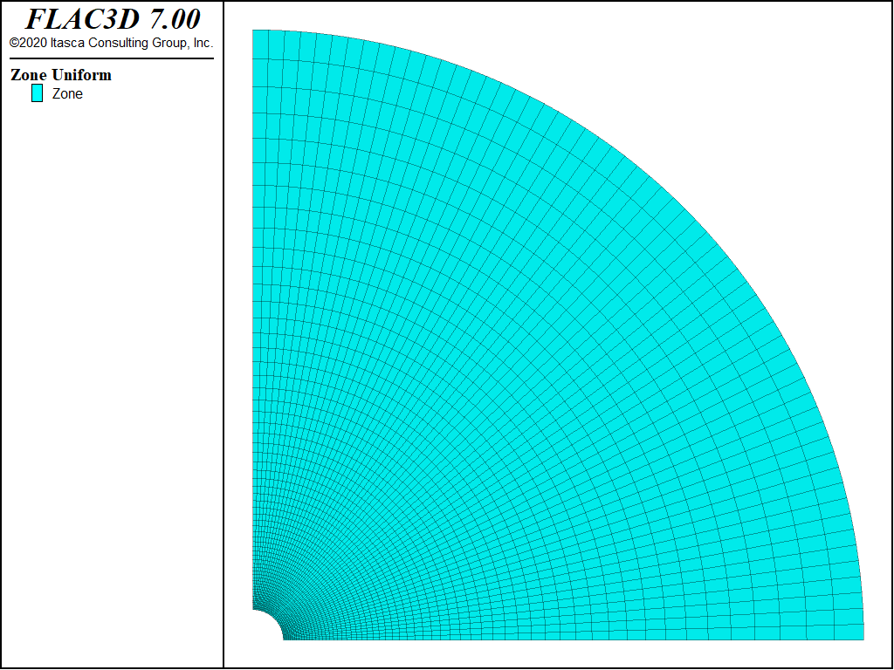
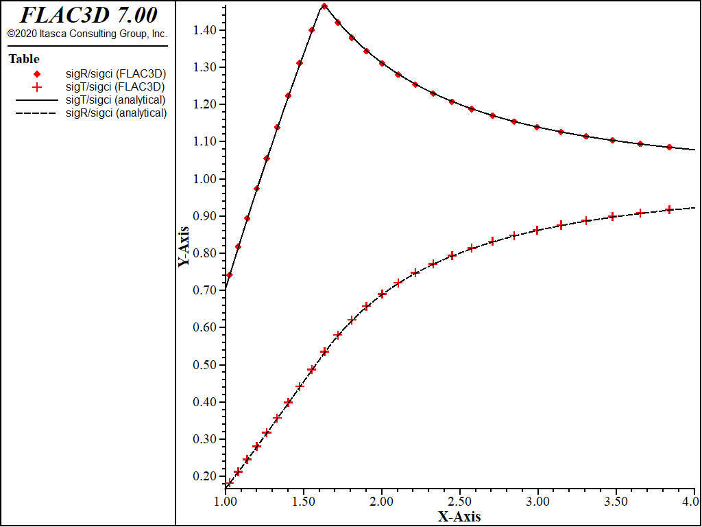
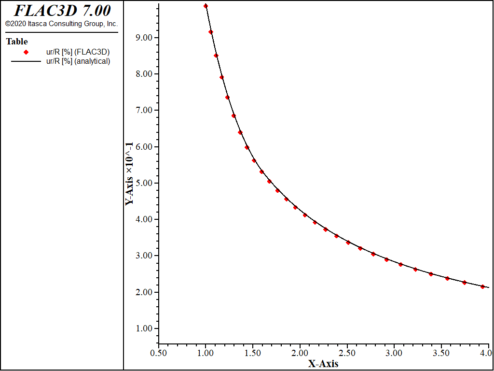
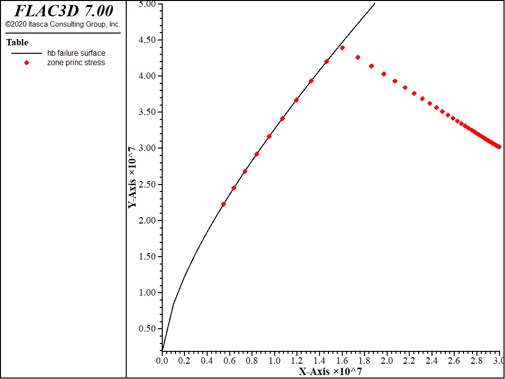
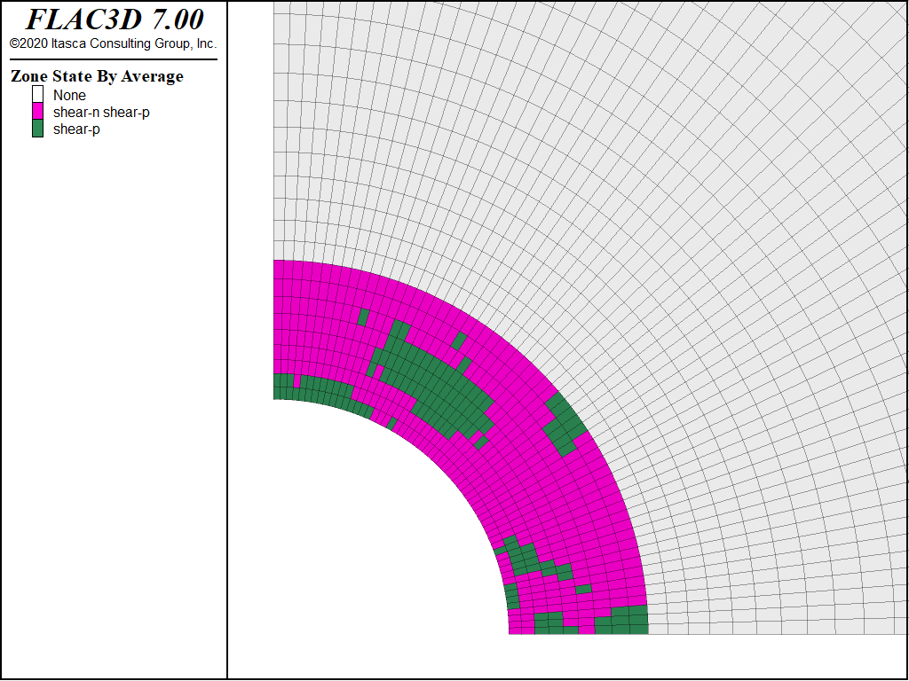

无限 Hoek-Brown 介质中的圆柱孔
问题描述
注意
本示例的项目文件可在 FLAC3D 中查看/运行。[1] 该项目的主数据文件见本示例末尾（main data file）。
计算无限 Hoek-Brown 介质中圆柱孔在原位应力场作用下、并受内压支护时的应力和位移。考虑在均匀压应力 \(\sigma _{o}\) = 30 MPa 的无限体中开挖半径为 \(b\) = 2 m 的圆柱孔。支护由内压 \(p_i\) = 5 MPa 提供。
该物体具有三项材料性质：
| 剪切模量（\(G\)） | 2.20 GPa |
| 体积模量（\(K\)） | 3.667 GPa |
| 密度（\(\rho\)） | 2000 kg/m3 |
岩石的 Hoek-Brown 强度性质取值为
| \(m_b\) | 1.7 |
| \(s\) | 0.0039 |
| \(a\) | 0.5 |
| \(\sigma_{ci}\) | 30 MPa |
闭式解
Carranza-Torres 和 Fairhurst（1999）给出了该问题在关联塑性流动和非关联塑性流动（剪胀为零）两种情况下的解析解。本验证练习中仅给出非关联流动的情形。
缩放后的远场应力 \(S_o\) 和缩放后的内压 \(P_i\) 由以下两个方程确定：
达到应力状态弹性极限时的缩放临界内压 \(P_{i}^{cr}\) 按下式计算
临界内压 \(p_{i}^{cr}\) 则为
由于 \(p_{i}<p_{i}^{cr}\)，孔周围均匀发展出塑性区。破坏区的范围为
塑性区 \(r\leq b_{pl}\) 内径向应力 \(\sigma_{r}\) 和切向应力 \(\sigma_{\theta}\) 的解如下：
弹性区 \(r > b_{pl}\) 内应力状态的解为
对于剪胀为零的非关联流动情形，塑性区内的径向位移为
| 其中： | \(A_1\) | = | \(-K_{\psi}\); |
| \(A_2\) | = | \(1 - \nu - \nu K_{\psi}\); | |
| \(A_3\) | = | \(\nu - (1-\nu) K_{\psi}\); | |
| \(C\) | = | \(A_2 - A_3\); | |
| \(D\) | = | \(A_2 \left[ 2 (1-A_1) \sqrt{P_{i}^{cr}} - 1 \right] - A_3 \left[ 2 (1-A_1) \sqrt{P_{i}^{cr}} - A_1 \right]\)；以及 | |
| \(K_{\psi}\) | = | \({{1 + \sin{\psi}}\over{1 - \sin{\psi}}}\). | |
| \(\psi\) = | 剪胀角；\(G\) 为剪切模量；\(\nu\) 为泊松比。 |
FLAC3D Model
为本问题建立的 FLAC3D 模型为平面应变模型，分析平面垂直于孔轴。由于对称性，只需分析问题的四分之一。网格见图 1（Figure 1）。如图所示，网格为径向对称网格，网格单元尺寸随远离孔而增大。网格包含 3600 个网格单元，边界位于距孔中心 20 个半径处。模拟所用的本构模型为 Hoek-Brown-PAC 模型（Hoek-Brown-PAC model）。


图 1：平面应变模型的 FLAC3D 网格单元几何。
结果与讨论
上文方程中给出的径向和切向应力以及径向位移的解析解编写在“check.dat”的 FISH 函数中。随后将解析结果和 FLAC3D 结果复制到表格中进行比较。表 4（Table 4） 给出了 FISH 函数生成解析解并与 FLAC3D 结果比较所需的输入。沿自孔中心量测的径向路径比较应力和位移。FISH 变量 隧道半径（radius _tunnel） 为隧道半径，最大刚体（rb _max） 定义归一化路径的长度（\(r\over{\_radius\_tunnel}\)），\(\_npts\) 定义沿路径的测点数量。
| 参数名称 | 值 |
|---|---|
| sig0 | 30e6 |
| pi | 5e6 |
| sigci | 30e6 |
| mb | 1.7 |
| s | 3.9e-3 |
| G | 2.2e9 |
| nu | 0.25 |
| npts | 100 |
| rb_max | 4.0 |
| radius_tunnel | 2.0 |
图 2（Figure 2） 给出了由 FLAC3D 计算的径向和切向应力与 \(\sigma_r\) 和 \(\sigma_\theta\) 解析解的比较。图 3（Figure 3） 比较了径向位移 \(u_r\)。两项比较的吻合程度都非常好。
Hoek-Brown 破坏包络线图见图 4（Figure 4）。该图上标出了网格单元应力，显示了破坏区的范围。图 5（Figure 5） 显示了网格单元的塑性指示，其同样表示破坏区的范围。这与解析解 3.2 m (1) 相对应。


图 2：无限 Hoek-Brown 介质中圆柱孔的 \(\sigma_r\) 和 \(\sigma_\theta\) 比较（沿归一化路径 1 < r/_radius_tunnel < 4）。


图 3：无限 Hoek-Brown 介质中圆柱孔的 \(u_r\) 比较（沿归一化路径 1 < r/_radius_tunnel < 4）。


图 4：Hoek-Brown 破坏包络线。


图 5：Hoek-Brown 模型的塑性指示。
参考文献
Carranza-Torres, C., and C. Fairhurst. “The Elasto-plastic Response of Underground Excavations in Rock Masses that Satisfy the Hoek-Brown Failure Criterion,” Int. J. Rock Mech. Min. Sci., 36, 777-809 (1999).
Hoek, E., and E. T. Brown. “Empirical Strength Criterion for Rock Masses,” J. Geotech. Engng. Div. ASCE, 106, 1013-1035 (1980).
Hoek, E., and E. T. Brown. Underground Excavations in Rock. London: IMM (1982).
Hoek E., and E. T. Brown. “The Hoek-Brown Failure Criterion — A 1988 Update,” in Rock Engineering for Underground Excavations (Proceedings of the 15th Canadian Rock Mechanics Symposium, October 1988), pp. 31-38. Toronto: University of Toronto, Department of Civil Engineering (1988).
数据文件
CylinderInHoekBrownPAC.dat
model new
model large-strain off
; 创建网格单元
zone create cylindrical-shell point 0 (0,0,0) point 1 (40,0,0) ...
point 2 (0,0.2,0) point 3 (0,0,40) ...
dim 2 ratio 1.05 size 60 1 60
; 分配本构模型和属性
zone cmodel assign hoek-brown-pac
zone property bulk 3.66700006e9 shear 2.2e9 constant-s 0.0039 ...
constant-mb 1.7 constant-sci 3.0e7 ...
constant-a 0.5 stress-confining-prescribed 0.0 density 2000
; 初始化应力场
zone initialize stress xx -3e7 yy -3e7 zz -3e7
; 为模型边界命名
zone face skin
; 施加边界条件
zone face apply stress-normal -3e7 range group 'East'
zone face apply stress-normal -5e6 range group 'West1'
zone face apply velocity-normal 0.0 range group 'Bottom' or 'West2'
zone face apply velocity-normal 0.0 range group 'South' or 'North'
; 记录若干历程
model history mechanical ratio-local
; 求解模型
model solve ratio-local 1e-4
; 保存模型
model save 'hoek'
尾注
| [1] | 要在 FLAC3D 中查看该项目，请使用程序菜单。
⮡ FLAC |
⇐ Cylindrical Hole in an Infinite Mohr-Coulomb Material | Rough Strip Footing on a Cohesive Frictionless Material ⇒
| 这些内容对您有帮助吗？… | FLAC3D © 2019, Itasca | 原文更新于 2020 年 10 月 8 日 |